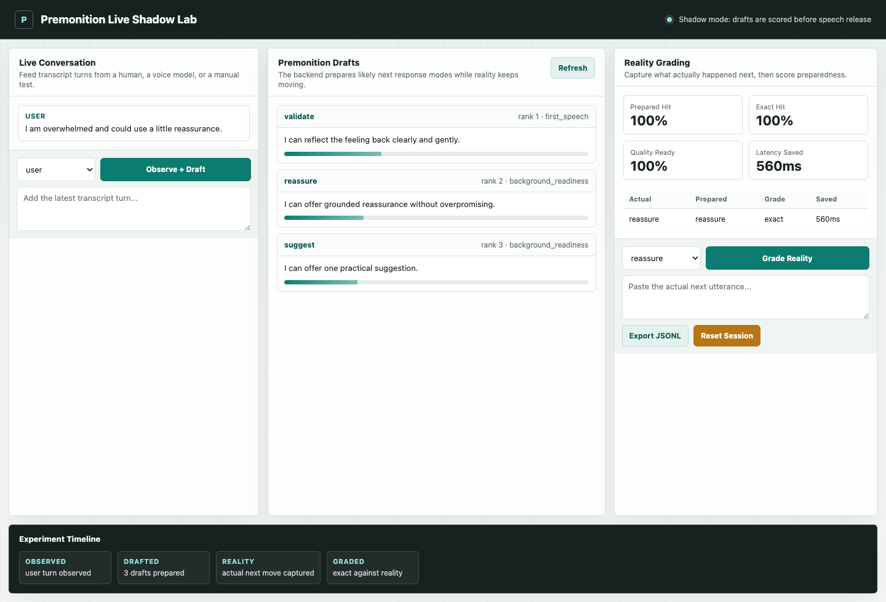
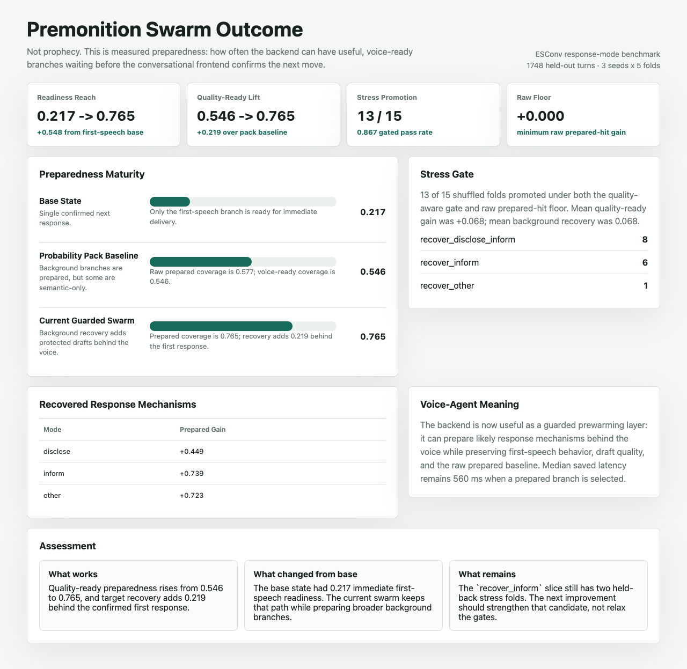

Observe the live moment
The system starts with the current conversation or replay turn. Reality remains the root, not the model's imagination.
A prepared mind behind the voice.
An experimental backend for conversational AI that predicts likely next moves, prepares safe draft responses in shadow mode, waits for reality to confirm a branch, and then measures what actually improved.
Premonition is built around a simple distinction: the speaking model should stay present, while a hidden backend rehearses likely next turns and keeps every speculative draft behind a confirmation gate.
The system starts with the current conversation or replay turn. Reality remains the root, not the model's imagination.
The backend predicts likely response modes, builds bounded drafts, and keeps them hidden until the observed branch matches.
Every hit, miss, quality gate, latency estimate, and segment regression feeds back into the benchmark loop.
In held-out tests, the important question is not whether the system can blindly speak early. It is whether, once the next conversational direction becomes clear, a useful speech-ready draft is already waiting.
Usable prepared response availability after branch confirmation, up from the original first-speech baseline.
Recovery policies increased prepared coverage while preserving the TTS-readiness quality floor.
Average quality-ready improvement across the 5-seed x 5-fold ESConv stress test.
DailyDialog promoted safely on ten folds while weak folds stayed baseline instead of forcing regressions.
Replay, Probability Pack, live-shadow, CLI, and dashboard tests covered the current implementation checkpoint.
This is the core experiment: keep the front-facing agent fast and present, while the hidden backend prepares branches in parallel and waits for confirmation before anything reaches the user.
Stays present, understands the current turn, and avoids carrying the whole future in working memory.
Uses confirmed context only. Speculation stays hidden.
The observed next move matched a prepared validation branch. The draft can be used quickly after confirmation.
exact match feeds the benchmark report.
Hits, misses, weak response modes, and protected-slice regressions update the next run.
The lab observes transcript turns, generates hidden Premonition drafts, accepts the actual next move, grades draft readiness, estimates saved latency, and exports replay rows for future benchmarks.

Premonition separates the visible conversation from the background rehearsal layer, then scores whether rehearsal actually helped.
Predicts likely next events or response modes from the current context.
Prepares bounded drafts, policy checks, and tool plans for useful branches.
Keeps speculation hidden until reality confirms a matching branch.
Compares prediction, preparedness, latency, cost, and safety across runs.
The current project is still a research harness, not a production voice agent. The honest milestone is that the backend can now be measured, visualized, and tested in shadow mode.
Measure branch prediction, prepared artifacts, latency estimates, and unsafe leak rate across repeatable turns.
Train guarded preparation behavior and accept only improvements that survive held-out checks.
Run beside manual or live transcript turns, inspect prepared drafts, and export new benchmark rows.
Connect the shadow layer to a TTS/voice stack so confirmed drafts can reduce perceived response delay.

Premonition is a build-in-public attempt to answer that question with benchmarks, shadow-mode testing, and clear safety boundaries. The magic is not prediction. The magic is measured readiness.